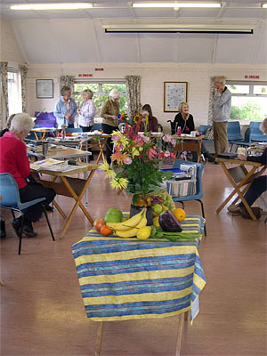

The Arun Art Society is a thriving and active club for experienced local artists. Members come from around a 20 mile radius of Ferring village where we meet in the Village Hall. We always welcome new members with fresh talents and enthusiasm for drawing and painting.
In the winter months, from mid September until the end of April, we meet on Wednesday mornings, to paint and draw suggested subjects or "own choice". In the summer we arrange attractive outside venues to sketch and paint, such as Arundel Castle, the Downs, and Littlehampton Harbour.
Demonstrations by professional artists are held nearly every month on Saturday afternoon in the Ferring Village Hall, and visitors are warmly invited to attend.
Our annual Art Exhibition is held at the end of July/beginning of August for one week at Ferring Village Hall, with members' framed and unframed art for sale. A party is held on the first evening!
At Arun Art Society we are always looking for new members, so please do get in contact or have a further look around our website!